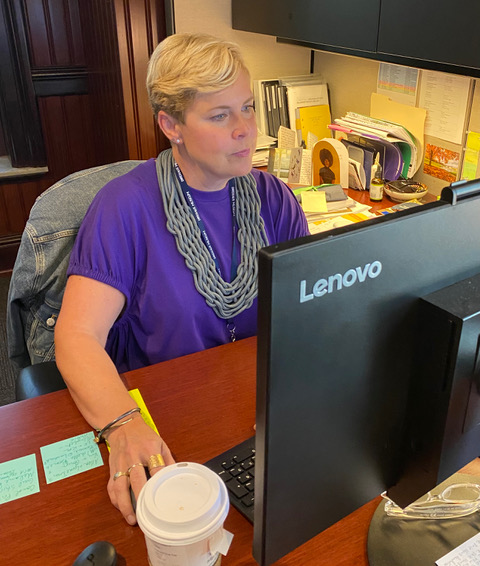
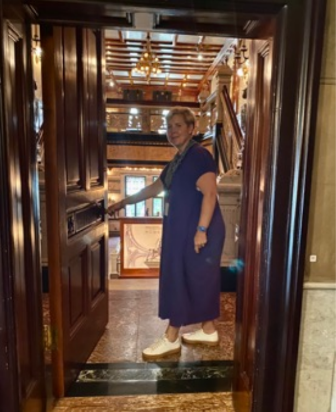
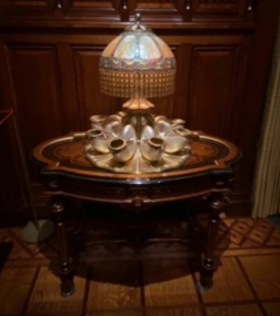
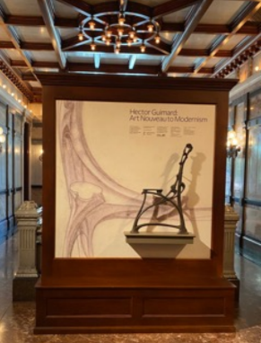
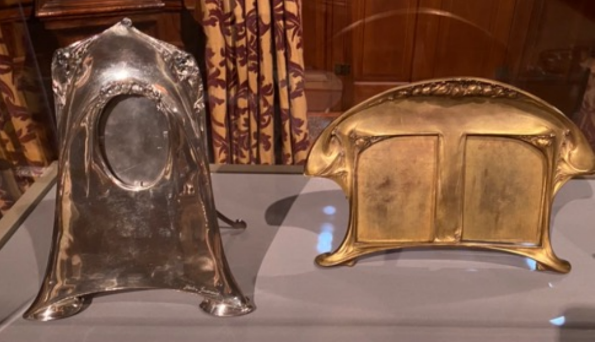
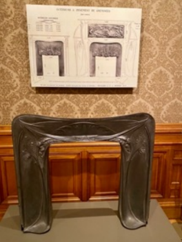
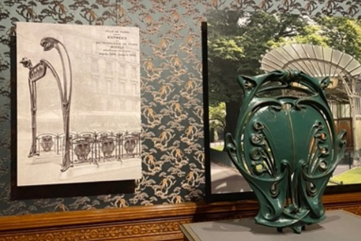
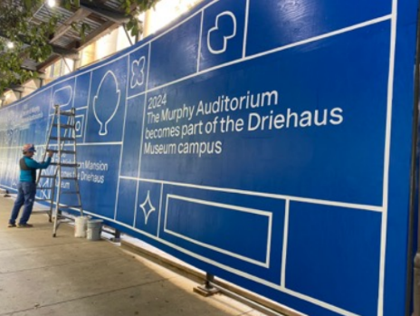
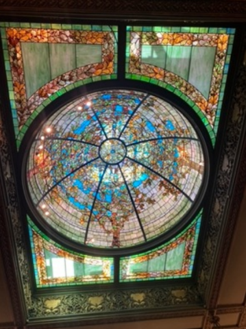

A newcomer to Chicago walking along East Erie Street would be surprised to see a break in the row of high-rise apartment buildings at the corner of Wabash Avenue: an imposing mansion from Chicago’s Gilded Age, the Driehaus Museum, and a large classical façade next door. The museum with its recently acquired Murphy Auditorium is on the verge of an expanded mission in new hands with the appointment of Lisa Key as Executive Director.

The Richard M. Driehaus Museum and the Murphy Auditorium
Key grew up in rural Indiana not going to museums. In high school, she worked as an intern at radio stations and thought she might go into communications. It all changed her freshman year at Valparaiso University when she took a class in museum studies. “I took this elective class with the university museum’s director at the time, who had been there 25 years, and I was inspired by the field of museums and the work that goes on in museums, from a curatorial perspective, but also from an administrative perspective. From that first semester he saw the interest that I had, and he invited me to be an intern. I was an intern throughout my undergraduate years…we’re still in touch!…What I realized was that I liked the faster pace and demands that administration presented.”

Lisa Key at her desk
Key would continue to have impressive mentors. She pursued her studies with a master’s degree in museum administration from Indiana University; she completed the degree with a required internship – at the Art Institute of Chicago. She worked for Greg Cameron, now the executive director of the Joffrey Ballet, learning the basics in fundraising and corporate relations. He introduced her to the Chicago Cultural Center, where she worked for the legendary Arts Commissioner Lois Weisberg.
After a stint at the Field Museum, she spent 15 years at the Museum of Contemporary Art before she was appointed to run the Driehaus Museum earlier this year. Contradicting what many might assume the museum is, she points out, “I don’t believe we are only a house museum. We are a museum of art, architecture and design; we are housed in the historic Nickerson Mansion, which has been preserved to its Gilded Age splendor…our focus is of course the history, [but] we are at this really interesting point in the collection where we are moving into a legacy mode.”

Key leads the way from the former servants’ quarters where museum offices are located into the museum proper

Tiffany nautilus shell lamp, part of the permenant collection
The museum was founded 15 years ago by the late financier Richard Driehaus, a noted supporter of historic preservation, art, architecture, and design. “We’re moving into a position where we’re carrying on that legacy but not driven by that person,” Key said. She compares the Driehaus to the Frick and the Morgan in New York, each founded by one benefactor, but with their own identities and exhibition programs. She explains that the Driehaus has an exhibition program that relates to history, reflected in their current exhibition.
The museum is now celebrating the work of the 19th century French art nouveau architect and designer, Hector Guimard, best known in this country for his design of the French metro station signage. “He was the next iteration of the ideas that were going on in the period of time in which this mansion was built,” said Key. “For us, we embrace the fact that our galleries are in an historic mansion and this exhibition illustrates that so well.” Guimard designed for individuals, but he also embraced new technology that enabled cast iron production to create items for the mass market. He applied his art nouveau style to everything from picture frames to mantlepieces, believing that everyone should have access to design.


 |
 |
Key is working closely with the Alliance Française on programming related to the Guimard exhibition, the first in the United States since the 1970’s. Paris is a sister city to Chicago and that relationship led to the gift of a reproduction of the Paris Metro sign installed at the Van Buren L stop, temporarily removed for station renovation and under restoration by the Alliance Française. “That’s one of the very intentional things we are doing in this new chapter, reaching out and inviting partnerships and inviting others to be with us as we do this work,” said Key…”so the Alliance was a logical partner. They have stepped up incredibly to be partners with us not only to co-market this [exhibition] to their members… but helping us with the symposium that is happening in October.”
The Symposium, set for Oct. 21 at the Alliance Française, will feature co-curator David A. Hanks, who will discuss the American collecting of Guimard’s designs, Co-curator Sarah Coffin on Guimard’s wife Adeline’s efforts to preserve his work; and Nicolas Horiot, president of the Cercle Guimard on efforts to establish a Guimard museum. Afternoon sessions will focus on the artist’s connection to planned communities and to other architects and his mass operational housing projects.
The Museum’s former next-door neighbor is an important part of the new direction for the Driehaus Museum. The John B. Murphy Auditorium had been owned by the American College of Surgeons. It was purchased two years ago by the museum to expand its campus and is now under renovation. A film series, additional lectures, tours, and exhibitions will be possible in the new space, further enhancing the museum’s image. “The way in which we are [also] differentiate ourselves from a house museum is our contemporary art series,” Key explained. “We have a series called ‘The Tale of Today,’ which features contemporary artists whose work pulls forward history, pulls forward Chicago, and pulls forward those thoughts and ideas into today. For example, we’re commissioning artists to work based the materiality of the Nickerson Mansion. There are 21 types of marble; the entirely to the mansion is our collection so we’re inviting artists to respond to that and make new work which is that point of differentiation.”

Key relates that historian Tim Samuelson says that saving the Nickerson mansion was the first Chicago moment when, in 1919, a group of citizens banded together to save a mansion from the wrecking ball. They gave it to the American College of Surgeons, who later built the adjacent Murphy auditorium in 1926. “The auditorium was historically preserved, but we’re renovating offices on the 5th and 6th floors,” said Key. “We’re creating artists’ studios and an outdoor sculpture garden. What are we going to do once we have this new space and these new offices? That’s our opportunity and challenge.”
Covid impact? “We’re still in the recovery from those dark days. Museums sit in a different space from a performing operation… We’ve never depended on admissions for all our revenue. The minute you walk in, you’re immediately transported into an experience you can’t get online. You’re seeing something that takes your breath away,” said Key. Finding new audiences is a primary goal. “We will promote ourselves more, extending a hand to audiences. There are a lot of people who are almost here. How do we reach out and get them here? What’s interesting to us is that the Gilded Age is often taught in junior high. The students love it! Teachers say they don’t have to quiet them here… We’re also going to be presenting a jewelry collection next year…. Many people don’t see jewelry as an art form, but It’s such an accessible art form. I can see myself wearing this, [a visitor might say] for example.”
Key hopes visitors see that this is an incredible place to visit and understand that Chicago history is alive and present today. “The past and the future…there are so many similarities between the Gilded Age and today. [What] I’m really excited about…we had a short gap in our exhibit calendar. From Nov 30 through January, [we’ll have] a kind of pop-up exhibit: From Glass to Garden. We’re asking florists to select their favorite image from our Tiffany collection and create a floral installation. It’s a great family friendly exhibition…for everyone to find something to love.”

The Tiffany dome in the Driehaus Museum
The Driehaus Museum does in fact offer something that everyone can love. Whether it’s the dramatic impact of the marble entrance hall or the detail of the Tiffany dome or a relevant exhibition that ties the Gilded Age to the history of Chicago, Lisa Key is working to ensure that the museum gives one a sense of our place in Chicago’s history and future.